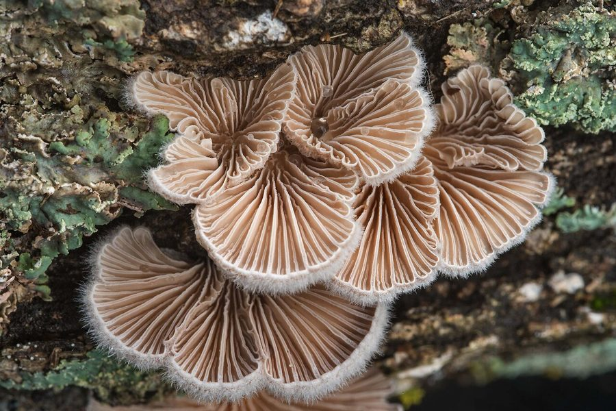

लकड़ी का कानSplitgill Mushroom
Schizophyllum commune · Schizophyllaceae · FNG-0007

- Scientific name
- Schizophyllum commune Fr.
- Family
- Schizophyllaceae
- Hindi
- लकड़ी का कान
- Status here
- native
- IUCN
- not evaluated
When to look कब देखें
Present all year.
लकड़ी का कान / Splitgill Mushroom
Schizophyllum commune Fr. — Schizophyllaceae
लकड़ी का कान (स्प्लिटगिल मशरूम) — उत्तर प्रदेश के मृत और सड़ रहे पेड़ों के तनों, सूखे आम और नीम की शाखाओं तथा लकड़ी के बाड़ों पर उगने वाला एक बहुत ही आम, पंखे या कान के आकार का लकड़ी-अपघटक कवक (bracket fungus) है। यह सफेद से लेकर हल्के धूसर (greyish) रंग का होता है और इसका ऊपरी हिस्सा रोएंदार होता है। इसके नीचे की गिल्स (gills) की एक अनूठी विशेषता यह है कि ये लंबाई में विभाजित (split) होती हैं, जो शुष्क मौसम में बंद हो जाती हैं ताकि बीजाणुओं (spores) को बचाया जा सके और नमी मिलने पर पुनः खुल जाती हैं। यह मशरूम बहुत कठोर और चमड़े जैसा होता है, इसलिए यह खाने योग्य नहीं होता है। यह जंगलों और बगीचों में सूखी लकड़ियों के रेशों (cellulose) को गलाकर मिट्टी को समृद्ध बनाने में महत्वपूर्ण भूमिका निभाता है।
Quick Identification त्वरित पहचान
| Feature | Description |
|---|---|
| Form | Small, fan-shaped or shell-shaped bracket (1–4 cm wide), lacking a stem, attached directly to wood |
| Upper Surface | Densely hairy, velvety, white to greyish-white, often showing concentric zones when young |
| Gills (Under Surface) | Radiating from the point of attachment; pale pinkish-grey to white, deeply split longitudinally along the edges |
| Texture | Tough, leathery, and flexible; does not rot easily like typical umbrella mushrooms |
| Reaction to Dryness | The split gills roll inward to cover the spore-producing surface during dry weather, unrolling upon hydration |
Field tip: Look for small, dry, velvety white-grey brackets growing in clusters on dead mango or neem logs. Flip one over: you will see unique radiating pinkish-grey gills that appear split down the center.
Morphology आकारिकी
Biometrics (typical measurements for specimens in Basti):
| Feature | Measurement |
|---|---|
| Cap diameter (width) | 1–4 cm |
| Spore print colour | White |
Note: Stipe height and stipe diameter are omitted as this species is sessile (lacks a stem).
Structure & Gills: The bracket is laterally attached to the substrate. The gills are actually double-layered plates that split and roll back when the air is dry, protecting the basidia from desiccation. This xerotolerant mechanism allows it to survive in dry environments.
Spores: Microscopic, cylindrical to oblong, smooth, hyaline, measuring 5–7 x 1.5–2.5 µm.
Ecology and Substrate पारिस्थितिकी और आधार
Schizophyllum commune is a white-rot wood-decay saprotroph. It produces enzymes (cellulases and xylanases) that break down the complex cellulose and lignin in dead deciduous hardwood. It is found on dry logs, fallen twigs, and timber structures throughout Basti district. It is highly cosmopolitan and can tolerate severe desiccation, reviving and releasing spores within hours of receiving rain.
Life Cycle / Phenology जीवन चक्र
- Vegetative Growth: The mycelium grows inside decaying wood, active throughout the year.
- Fruiting: Mushrooms (basidiocarps) can develop in any month after rain, but are most abundant during and after the monsoon (July–November).
- Survival: The brackets can dry out completely, remain dormant for months, and become active again to release spores when rehydrated.
Associated Species and Decay Role सहजीवी संबंध और अपघटन कार्य
- Nutrient Cycling: Functions as a primary decomposer, clearing dead branches in mango orchards (
[FLR-0011 Mango]) and returning organic matter to the soil food web. - Mycorrhizae Support: Prepares the substrate for subsequent saprophytic fungi and bacteria.
Agricultural / Human Relevance कृषि प्रासंगिकता
Decomposer and minor pathogen.
- Wood Decay: Decays wooden fence posts and structural timber in villages, causing dry rot over time.
- Non-edibility: The brackets are too tough, fibrous, and leathery to be eaten, though they are non-toxic.
- Biotechnology: Investigated globally for producing industrial enzymes and beta-glucan compounds used in medicine.
- Medical Note: In rare cases, inhaling massive amounts of spores can cause respiratory infections (schizomycosis) in immunocompromised individuals.
Expected Locally स्थानीय रूप से अपेक्षित
Not a field record. Written from published accounts for eastern Uttar Pradesh. No confirmed local sighting yet — if you have seen it, that is what the atlas needs.
अभी तक स्थानीय पुष्टि नहीं। यह विवरण प्रकाशित स्रोतों से है, किसी अवलोकन से नहीं।
Extremely common across Basti district, especially on dead wood piles kept for fuel outside village houses in Bahadurpur and Kaptanganj blocks. It is regularly observed on fallen mango branches in old orchards (aam का bagicha). Farmers recognize it as a sign of naturally decaying wood.
Distribution वितरण
Global range: Virtually cosmopolitan; found on every continent except Antarctica, adapting to diverse temperate, tropical, and boreal climates.
In India: Widespread throughout all forest zones and agricultural plains.
In Uttar Pradesh: Abundant on dead wood in all districts.
In Basti district / eastern UP: Native resident; extremely common.
Research Questions शोध प्रश्न
- How quickly does Schizophyllum commune rehydrate and begin releasing spores after a dry period in Basti?
- Is there a preference of Schizophyllum commune for mango wood over neem wood logs in local agricultural ecosystems? / क्या स्थानीय कृषि प्रणालियों में नीम की लकड़ियों की तुलना में आम की लकड़ियों पर splitgill मशरूम का उगना अधिक पसंद किया जाता है?
- Can a child place a dry, curled splitgill bracket in a saucer of water and watch it unroll its gills over 30 minutes? — A simple hands-on biological movement experiment.
- What is the approximate rate of wood weight loss caused by Schizophyllum commune colonization over a six-month period?
- How does the spore concentration of Schizophyllum commune in local Basti air vary between dry summer days and wet monsoon nights? / बस्ती की स्थानीय हवा में splitgill मशरूम के बीजाणुओं की सांद्रता शुष्क गर्मियों के दिनों और गीली मानसून की रातों के बीच कैसे भिन्न होती है?
Similar Species मिलती-जुलती प्रजातियाँ
| Species | Key Difference | हिंदी |
|---|---|---|
| Trametes versicolor (Turkey Tail) | Upper surface has multicolored concentric bands; under surface has tiny pores (no gills); texture is woody. | सतरंगी मशरूम — बहुरंगी पट्टियाँ, छिद्रयुक्त निचली सतह |
| Stereum hirsutum (Hairy Parchment) | Lacks gills entirely; under surface is smooth and yellow-orange; upper surface is hairy and zoned. | रोएंदार पार्चमेंट कवक — गिल्स रहित, चिकनी पीली सतह |
| Lenzites betulina (Gilled Polypore) | Gills are leathery but not split longitudinally; cap is larger and thicker; typically grows on birch or oak. | गिल पॉलीपोर — चपटी अविभाजित गिल्स, मोटा कवक |
Taxonomy & Classification वर्गीकरण
Original description. The species was first described in 1783 by the Swedish botanist Carl Linnaeus as Agaricus communis. Elias Magnus Fries transferred it to the genus Schizophyllum as Schizophyllum commune in 1815 in Observationes Mycologicae (Vol. 1, p. 103). The genus name Schizophyllum is derived from the Greek schizo (to split) and phyllon (leaf/gill). The specific epithet commune is Latin for "common."
Subspecies. Monotypic.
Family and order placement. Placed in the order Agaricales, family Schizophyllaceae, genus Schizophyllum.
Phylogenetic notes. Known for carrying over 23,000 distinct mating types (sexes), facilitating outcrossing in diverse environments.
IUCN status rationale. Not evaluated (NE) by the IUCN Fungal Conservation Committee. As one of the most common and widespread fungi on Earth, it is under no threat.
Photo Gallery फोटो गैलरी
References संदर्भ
- Fries, E.M. (1815). Observationes Mycologicae. Gerh. Bonnier, Havniae, Vol. 1, p. 103. [original description and transfer]
- Bilgrami, K.S., Jamaluddin, S., & Rizwi, M.A. (1991). Fungi of India: List and References. Today & Tomorrow's Printers and Publishers, New Delhi.
- Cooke, W. B. (1961). The genus Schizophyllum. Mycologia, 53(6), 575–599.
- Raper, J. R., Krongelb, G. S., & Share, M. Y. (1958). The number and distribution of mating types in Schizophyllum commune. Genetics, 43(4), 542–559.
- Botanical Survey of India. Fungus Flora of India. BSI, Kolkata.
- GBIF Occurrence Data — Schizophyllum commune (2026). GBIF taxon key: 5241128.
Source file: species/fungi/mushrooms/splitgill_mushroom.md